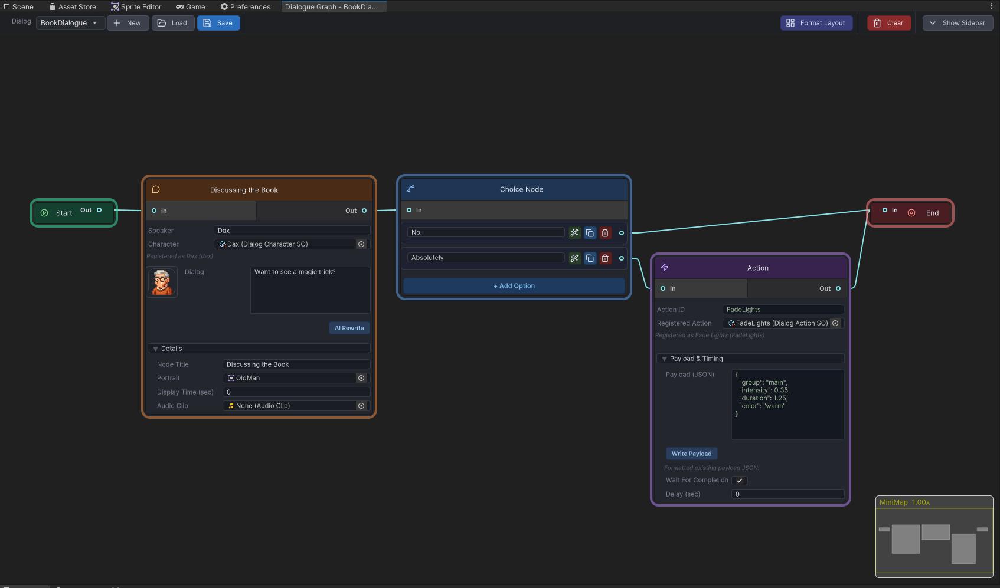
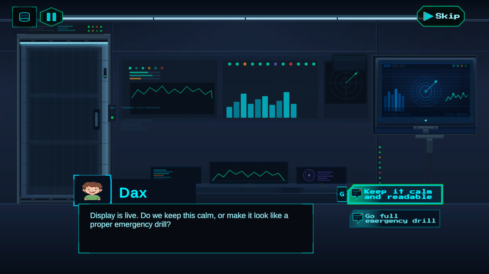
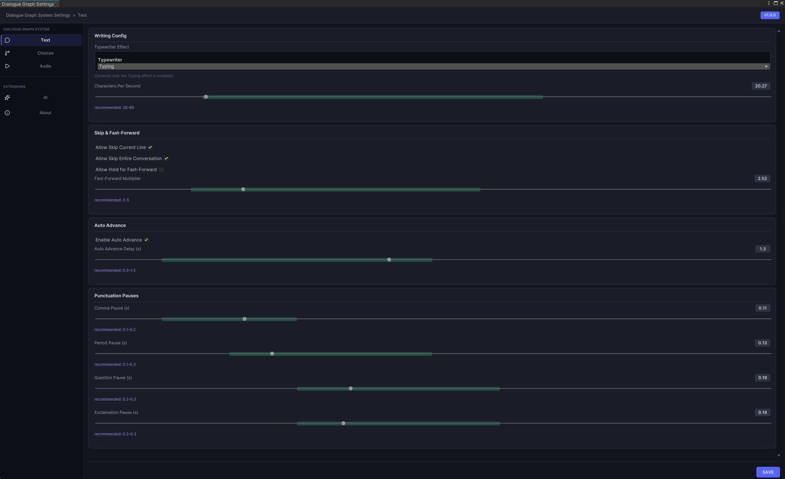
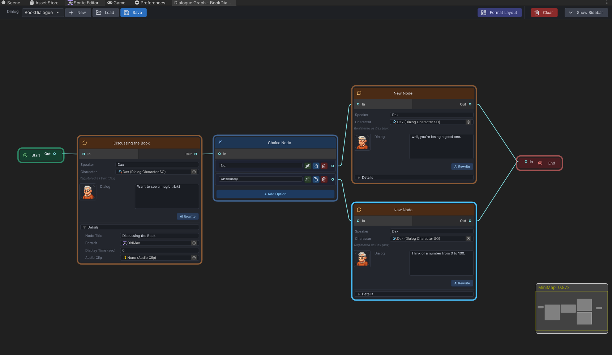

Unity Documentation Portal · version 3.0.0
Dialogue Graph System 3.0 documentation.
Product-specific documentation for Dialogue Graph System. It covers the runtime, editor tooling,
settings model, JSON workflow, transcript support, and the core asset workflow.
What the project does
Dialog Graph System is a Unity toolkit for authoring branching conversations in a graph editor and playing them
back through a runtime UI. It includes a JSON round-trip workflow, action nodes, a history panel, transcript
rebuilding, and theme-driven runtime presentation.
1
Demo scene, 3 playable graphs
5
Core node types
5
Ready-made UI themes
Graph Editor Overview

Who this documentation is for
Developers
Learn how to wire DialogManager, play conversations by dialogID, and integrate actions, history, and transcripts.
Contributors
Understand the editor/runtime split, asset model, and the safest extension points before changing the graph workflow.
Reviewers and clients
Inspect the architecture, supported workflows, and major systems without digging through every Unity script first.
Key features
Graph-based authoring
Author Start, Dialog, Choice, Action, and End nodes through editor-only GraphView tooling. The graph editor overview below is the visual reference for how authors build and connect dialogue content.
Runtime playback
Use TextMeshPro-backed UI for speaker names, portraits, typewriter effects, skip, autoplay, and choice handling. The runtime capture shows what a working conversation looks like in Play Mode.

JSON workflows
Export and import graph JSON for backup, review, migration, and controlled external tooling.
Action nodes
Run UnityEvent bindings or coroutine-based gameplay handlers through DialogActionRunner and IActionHandler.
History and transcripts
Keep a player-facing backlog and rebuild the exact played branch with deterministic transcript generation.
Visual themes and settings
Swap the entire UI look at runtime with DialogThemeSO. Five ready-made themes are included, and the settings window keeps runtime behavior in one place.

Validation and editor cleanup
Use graph validation plus the layout formatter to keep branching graphs readable and structurally safe as they grow.

Start here
Getting Started
Quick repo orientation, demo scenes, and the smallest runtime setup to get the system running.
Installation
Unity requirements, package assumptions, scene setup checklist, and runtime/editor setup basics.
Quick Tutorial
Create a graph, wire a dialogID, trigger playback, and inspect the branch transcript.
Architecture
Review the editor/runtime split, data flow, extension points, and current coupling boundaries.
3.0 Changelog
Review the headline authoring, runtime, localization, validation, and showcase updates.
Support
Find troubleshooting, public issue reporting, and private support channels.
License
Understand the Unity Asset Store license that applies to this package.
Examples and common workflows
Demo entry points in this repository
Open Assets/DialogGraphSystem/DemoScenes/DialogueDemo.unity and press Play. The demo menu lets you launch any of the three sample graphs.
| Graph asset | Purpose |
|---|
Assets/DialogGraphSystem/Graphs/Demo_CafeChoices.asset | Branching conversation with choices. |
Assets/DialogGraphSystem/Graphs/Demo_ControlRoomActions.asset | Action nodes and waitable coroutine behavior. |
Assets/DialogGraphSystem/Graphs/Demo_ProductTour.asset | Linear guided tour demonstrating typewriter and portrait effects. |